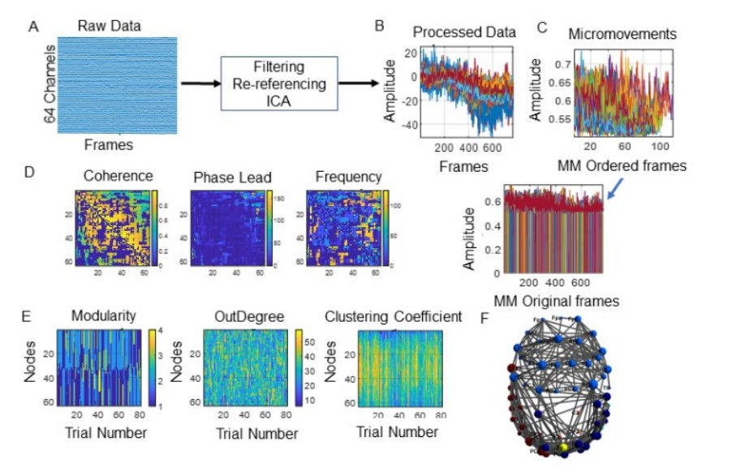
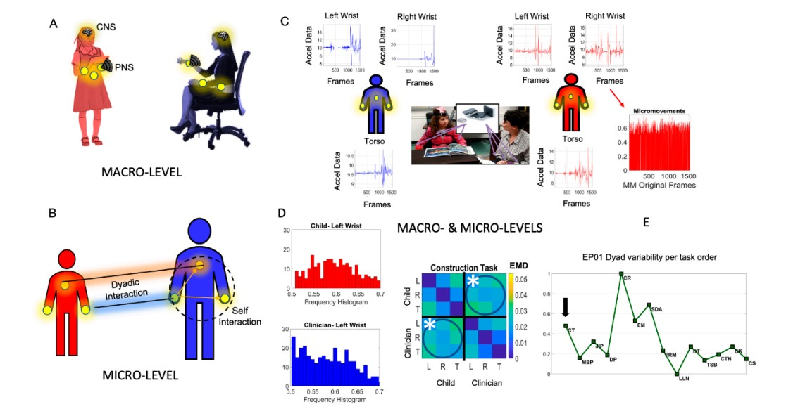
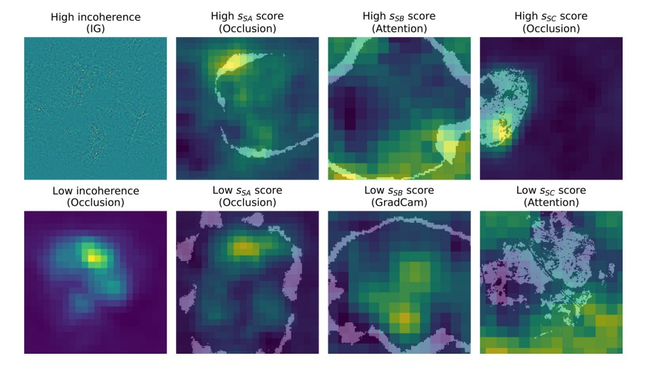
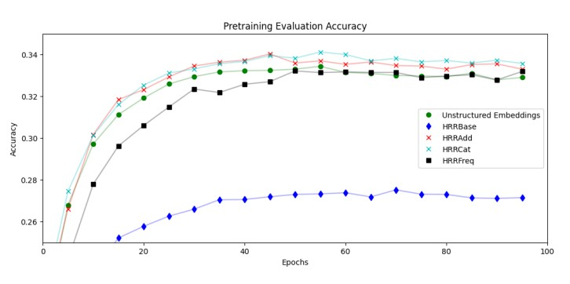

I am an AI researcher working on embodied AI and the safety of physical AI systems. At the Singapore University of Technology and Design (SUTD), I build reinforcement learning agents (Soft Actor-Critic) that learn contact-rich control of a simulated musculoskeletal arm in MuJoCo, driven by intrinsic, information-theoretic rewards rather than hand-designed task rewards. The agents act through a low-dimensional muscle-synergy action space and learn forward models of body and environment dynamics from proprioceptive and tactile signals under partial observability.
As a Technical Alignment Research Accelerator (TARA) AI Safety Fellow, I am working on physical AI safety: a mechanistic study of how robot foundation models handle hazardous instructions, aimed at a lightweight runtime safety monitor. The fellowship also runs me through the ARENA curriculum in mechanistic interpretability, RL and RLHF, and LLM evaluations.
My path here ran through motor neuroscience and brain-machine interfaces at Rutgers, explainable AI under the DARPA XAI program (metrics for whether saliency explanations are perceptually and semantically faithful), and neurosymbolic representation learning at the University of Waterloo, where we encoded medical ontologies into transformers with vector-symbolic architectures (VSA). I then spent nearly three years building and deploying clinical machine learning at Canadian hospitals.
Research interests

ACM MOCO 2020 · DOI ↗
Neural Connectivity Evolution during Adaptive Learning with and without Proprioception
EEG brain-machine interface study in which participants learned cursor control with and without proprioceptive feedback. Network analysis of EEG connectivity shows how cortical communication reorganizes during learning when sensory feedback is impoverished.
Methods: EEG · Brain-machine interface · Cross-coherence · Graph-theoretic connectivity

Journal of Personalized Medicine · DOI ↗
Digitized ADOS: Social Interactions beyond the Limits of the Naked Eye
Wearable motion sensors during autism assessments (ADOS) capture sub-second movement coupling between child and clinician that observers cannot see. Network analysis of this coupling yields digital biomarkers of social coordination.
Methods: Wearable inertial sensors · Cross-coherence · Network connectivity

Applied AI Letters · DOI ↗
Evaluating Perceptual and Semantic Interpretability of Saliency Methods: A Case Study of Melanoma
Two metrics for evaluating saliency explanations: a perceptual one (how coherent the attribution map looks) and a semantic one (overlap with the features dermatologists use). Six attribution methods benchmarked on a melanoma classifier.
Methods: Grad-CAM · SHAP · LIME · RISE · Occlusion · PyTorch

ACM KDD Workshop on Knowledge-Infused Learning · OpenReview ↗
Encoding Medical Ontologies with Holographic Reduced Representations for Transformers
A neurosymbolic method that encodes the SNOMED-CT ontology into transformer embeddings with holographic reduced representations, a vector-symbolic architecture. The structured embeddings generalize better to diagnoses unseen during training.
Methods: Holographic reduced representations · SNOMED-CT · MIMIC-IV · Transformers
Translational Psychiatry · Preprint ↗
A Precision Health Approach to Medication Management in Neurodevelopmental Conditions: Model Development and Validation Using Four International Cohorts
Stacked ensembles (gradient boosting and deep neural networks) that predict psychotropic prescribing for neurodivergent children, reaching AUROC 0.75 to 0.87, with external validation on two independent cohorts.
Clinical Child and Family Psychology Review · Springer ↗
Predictors of Health-Related Quality of Life in Neurodivergent Children: A Systematic Review
SSRN Preprint · SSRN ↗
The Contributions of Autism Traits, Physiological Arousal, and Emotion Dysregulation to Anxiety: A Structural Equation Modeling Study
Research Poster, Holland Bloorview · Poster ↗
Characterizing Sociodemographic Biases in Adaptive Functioning Data in Neurodivergent Children
Musculoskeletal Reinforcement Learning with Intrinsic Rewards
Soft Actor-Critic agents that learn contact-rich control of a simulated musculoskeletal arm in MuJoCo, driven by intrinsic, information-theoretic rewards. The arm acts through a low-dimensional muscle-synergy action space, and the agents learn forward models of body and environment dynamics from proprioceptive and tactile signals under partial observability. An earlier phase used Bayesian inverse RL to infer reward and dynamics from human motion-capture trajectories.
Mechanistic Safety of Robot Foundation Models
A mechanistic study of how robot foundation models handle hazardous instructions, aimed at a lightweight runtime safety monitor. Targeting 2027 workshop venues.
Cell-State Classification from Live-Cell Microscopy
BiLSTM classifier of cell states from live-cell microscopy time series, with the full pipeline built and run on a national HPC cluster.
Aether Wealth: AI-Powered Investment Intelligence Platform
Full-stack platform (Next.js/TypeScript, PostgreSQL) that combines market data, institutional filings, and social sentiment from external APIs into a Claude-powered reasoning layer, with a cost-aware caching layer and per-user context.
Live Demo ↗Deep Learning for Virtual Metrology in Semiconductor Manufacturing
Deep learning models that predict process-critical measurements directly from sensor data, reducing reliance on costly physical metrology steps.
Open to PhD opportunities, research collaborations, and roles in embodied AI, physical AI safety, and healthcare AI, across the US, Canada, and Singapore.